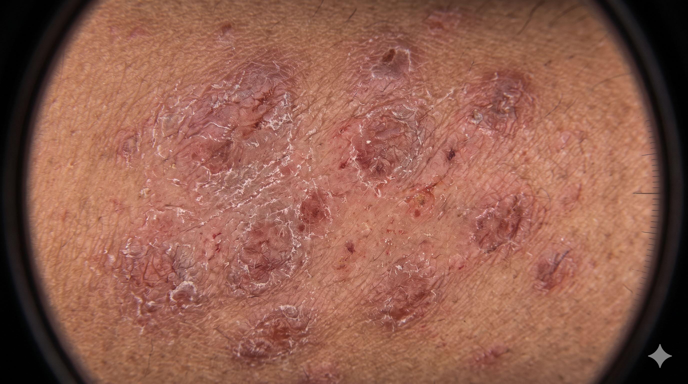

EV
Eleanor Vance
(42y, Female) HIGH RISK LESION
ID: PT-DERM-4821
•
Modality: Polarized Contact Dermoscopy
•
Site: Right Scapula
Dermatology (Cutaneous Oncology)
Epiluminescence Image
Optical 20x Zoom

ABCD TDS: 7.4 (> 5.45)
Blue-White Veil (+)
PDF
clinical_dermoscopy_evaluation.pdf
248 KB • Verified
Diagnostic Dermatology Report
PT-DERM-4821
Indication:
Asymmetric pigmented scapular lesion enlarging over 3 months with border scalloping.
ABCD Dermatoscopic Scoring Matrix
TDS: 7.4 / 8.0
A - Asymmetry: Marked dual-axis (2/2)
B - Border: Notched, abrupt cut-off (2/2)
C - Color: Black, brown, blue-white (2/2)
D - Diameter: 7.2 mm (>6mm threshold)
Diagnostic Impression:
1. High dermatoscopic suspicion for early Invasive Cutaneous Melanoma.
2. Immediate complete excisional biopsy with 2mm clinical margins required.
Clinical Report AI Co-Pilot
Grounded in Dermoscopy & ABCD criteria
Summarize ABCD criteria
Recommend excision margins
List differential diagnoses
Ask clinical co-pilot about this dermoscopy...